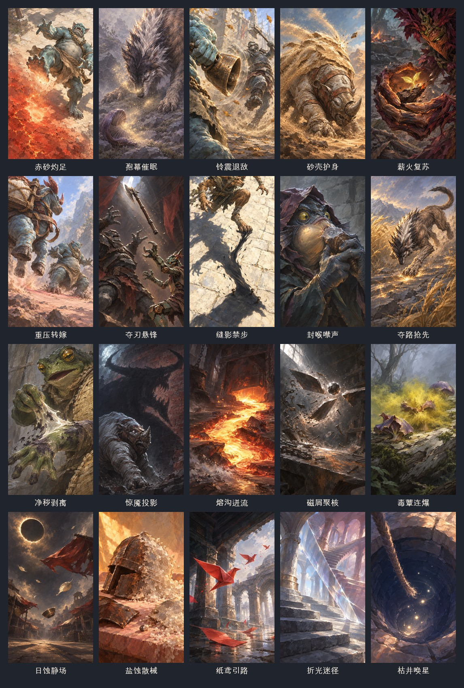

赤砂灼足

生成描述
为yf-artifact绘制一张法术概念插画，工作名「赤砂灼足」。沿用青蓝皮、宽嘴獠牙、大腹和粗臂的林营铜铃守卫，人物只占画面右侧一半，镜头斜俯到脚下。苍白砂岩院落中，一片沙地突然烧成朱砂红，细小热裂从左下向守卫脚下延伸；它一脚急抬，另一脚后退，双手本能张开，腰布向后甩。最亮的是脚掌刚离开热砂时留出的浅色轮廓与少量飞砂，热砂面积清楚而集中。白色院地、红砂与蓝皮形成三个大色块，人物投下锐利斜影，空气只有靠近红砂的一小片热扭曲。
已完成 20 张，Migoo Flare，768×1360。十二张使用已有单位作出场对象，八张描绘环境与器物法术。每张参考两幅Classic无框原画，点图可打开原图。

为yf-artifact绘制一张法术概念插画，工作名「赤砂灼足」。沿用青蓝皮、宽嘴獠牙、大腹和粗臂的林营铜铃守卫，人物只占画面右侧一半，镜头斜俯到脚下。苍白砂岩院落中，一片沙地突然烧成朱砂红，细小热裂从左下向守卫脚下延伸；它一脚急抬，另一脚后退，双手本能张开，腰布向后甩。最亮的是脚掌刚离开热砂时留出的浅色轮廓与少量飞砂，热砂面积清楚而集中。白色院地、红砂与蓝皮形成三个大色块，人物投下锐利斜影，空气只有靠近红砂的一小片热扭曲。
为yf-artifact绘制一张法术概念插画，工作名「孢幕催眠」。参考白鬃黑额长尾的暮坡嗅迹兽，画面裁到头、颈与两只前爪。它的头原本抬起，此刻在奶黄色细孢粉里慢慢垂下，眼睛半闭，嘴边的白色硬鬃松弛，前爪抓地的力道正放开。前景一只烟紫色菌盖侧翻，伞下孢粉以疏密两团落向兽鼻，粉尘在鼻端形成一道柔软弧。背景是朦胧浅灰苔地，整个画面安静柔和，最清楚的边缘放在鼻尖、眼皮与几根带粉鬃毛，孢雾用有颗粒的绘画色块表现。
为yf-artifact绘制一张法术概念插画，工作名「铃震退敌」。两张单位参考依次为林营铜铃守卫和獠牙门卫，保留它们各自的非人脸形、衣甲与比例。蓝皮大腹的摇铃者在左前景仅露肩、手与一只小铜铃，把铃口猛朝右甩；右后方灰蓝獠牙门卫上身后仰，一只脚离地，手中短戟向外摆。空气震动用铃口前方被压弯的一小片透明空气、同时翻起的枯叶和石地上扩散的一道浅尘弧交代。镜头把铃口放到近景最大，作用方向横过画面中央。背景是浅米色石墙和稀疏金色枯叶，铜铃磨痕、抓握指节和门卫被震离地的脚是焦点。
为yf-artifact绘制一张法术概念插画，工作名「砂壳护身」。沿用灰白厚皮、低头鼻角、护鼻片与短粗四足的浅泥披甲兽，镜头放近到头肩和前足。沙地上升起的粗砂正沿它的肩背凝结成几片薄而粗糙的弧形砂壳，最前一片刚挡住一粒飞来的小碎石。砂从地面到肩甲之间有两道清楚的斜升轨迹，壳面仍能看见粗颗粒和未闭合的裂口，背部皮肤从片隙露出。低角度前侧镜头，以乳白身体和淡赭砂壳形成宽亮面，锈红胸带作一小块色彩，斜阳强调壳边的厚度与石粒冲击点，背景远处沙坡松笔。
为yf-artifact绘制一张法术概念插画，工作名「薪火复苏」。沿用暗红叶冠、木节脸、细枝手臂的藤索编结工。画面是一次枯枝复苏法术的近景，树形居民的两只枝手合拢护住一截刚熄灭的焦木，焦木末端仍有一小点橙色余烬，裂开的炭皮里却正在长出两片浅黄绿小叶。角色的木节脸从右上侧低头看，枝指上细小的焦纹正在由暗变浅，几片象牙白灰从新芽旁脱落。主要形体是合拢的两只深色枝手与中央小芽，周围只留很少焦橙亮色。背景是冷灰石地与模糊火塘边，细节集中在余烬、木纤维和嫩叶透光。
为yf-artifact绘制一张法术概念插画，工作名「重压转嫁」。出场对象依次为青蓝红角、背双水瓮的驮水兽和青蓝大腹的营地守卫。画面描绘重量转嫁的一瞬，左前方原本驮重的兽四足微微轻抬，皮挽具松开半圈，背上的灰白水瓮仍完整在架中；右后方普通营地守卫突然弯膝下沉，双脚陷进粉砂地，两臂向外撑住身体。两者脚下的尘土沿一条很细的暗绯红弧轻轻相连，主要叙事依靠一边失重、一边承重的姿态和两组地面压痕。镜头贴近地面，前景兽蹄与后景巨足分开，头部只作较小的身份提示，浅粉砂土保留大片明亮中间调。
为yf-artifact绘制一张法术概念插画，工作名「夺刃悬锋」。两张参考为尖吻折角四肢的机械狗头人和灰蓝獠牙门卫。机械体位于右下半身，双手把一个短铁夹朝左上撑开；灰蓝门卫位于左侧，双手刚被震开，身体后缩。原本握在门卫手里的短戟已经离手，悬在画面正中央，戟柄与手掌之间有清楚空隙，戟刃一端朝向上方小片亮天空。几枚细碎铁屑沿短弧飞向机械铁夹，暗示夺械的力量。低角度斜侧构图，把悬空兵刃画成最清楚的长斜线，两名角色以不同深浅的半身压在两端。背景是暗红布幔与煤黑门洞，门口硬侧光只照兵刃上缘和两双手。
为yf-artifact绘制一张法术概念插画，工作名「缝影禁步」。沿用瘦长褐毛、兽形长脸、弯腿长臂的窄桥探哨。视角很高，画面大半是象牙白石地上一条清楚的长黑影，影子的脚踝部分被三根短而粗的暗铜钉钉进砖缝。真实角色仅占画面上端半身与一只抬起的脚，身体已经向前倾，脚的影子却仍死死留在原处，黑影在腿与足之间被拉成一条细长扭曲带。正午强太阳使铺地亮而简洁，钉头、拉长影边与正在使力的兽脚最清楚，人物脸在远处用松笔保留轮廓。少量碎影像干墨一样翘起，法术通过影子被固定与身体想离开的矛盾受力来表现。
为yf-artifact绘制一张法术概念插画，工作名「封喉噤声」。沿用潮沟灯侍的宽鱼嘴、侧鳍、向后翻起的灰紫帽和暗青外套。它正把一只小暗褐海螺举到嘴边吹响，嘴巴鼓起、眼睛张大，但螺口刚冒出的几只透明小气泡被一圈灰白薄蜡封在开口上，气泡停在壳内。近景画到脸、双手和海螺，重点是鼓起的鱼颊、紧握螺壳的指节与被封住的开口。淡黄鱼面由柔侧光照亮，帽后与外套合为一块深暗，背景只留浅灰石墙，整体安静而清楚。法术痕迹是一小片从螺口蔓延到唇边的灰白薄蜡，边缘细腻。
为yf-artifact绘制一张法术概念插画，工作名「夺路抢先」。沿用黑额、白色硬鬃、长尾与粗前爪的普通巡兽。它贴地从画面右后向左前冲过一段麦地石路，身体压低伸展，前爪落在一条刚被暖金色光点亮的石缝上，后足还在前一步扬起的尘迹中。路面裂缝前方几块石头上的金色细亮点按远近依次提前亮起，提示路径已被法术引导。镜头贴近地面从侧后方看，兽头与前爪最清楚，尾巴和后腿稍带松动笔触，麦秆在两侧向后折。画面以浅金麦地和冷灰路面为大色块，法术亮点小而有方向，动作与前后落点是主体。
为yf-artifact绘制一张法术概念插画，工作名「净秽剥离」。沿用暗绿圆腹、高位双眼、宽嘴蹼手和苇黄藤盾的蛙族护篓兵。它的盾臂和手背原本覆着几片墨紫色污垢状咒痕，此刻一层薄如湿布的象牙白光膜从手腕向指尖掀起，把黑垢整片带离皮肤，露出正常的绿色皮面。角色低头看臂，眼神放松，身体只占上半与右侧，中央是翻起的白膜和正脱离的黑色薄片。近景里藤盾仅露边缘供辨认，柔和阴天光照亮面部和手，背景为松笔灰褐木板，细节集中在指蹼、卷起膜边与剥离瞬间的暗亮分界。
为yf-artifact绘制一张法术概念插画，工作名「惊魇投影」。沿用灰白宽背、低头长角与护鼻片的普通厚皮兽，把镜头放近到它的头肩。兽背靠砖红旧墙，头忽然后扭，眼睛睁大，短耳贴紧，前足急刹。它投在墙上的影子却被惊魇法术拉成远大于身体的细长角形，影中头部的嘴形夸张张开，弯角伸过半幅墙面；现实中的鼻角保持原有短粗尺度。画面大半留给炭黑变形影与暗砖墙，小半是受惊的灰白兽头。低位惨白月光让现实鼻甲和眼睛有两点自然反亮，法术通过不匹配的巨影和动物反应表达，边缘与笔触松紧明确。
为yf-artifact绘制一张法术概念插画，工作名「熔沟迸流」。废弃锻造院的一条窄石沟被法术突然重新点燃，白热黄色的熔流从半开的炉门底部挤出，沿画面中央弯向前景，推起几块焦黑碎铁。镜头贴地看向炉门，熔流低而厚，边缘结着深绛红的薄壳，前景有一小片灰白炉灰正被热气吹散。门框和铁链只作黑色大形体，熔沟是画面唯一宽亮带，最精细处是表皮皱褶、铁片接触点和一两粒飞溅熔珠，远处炉口以粗笔炭黑与暗红表现。场景表现火法术改变环境的瞬间。
为yf-artifact绘制一张法术概念插画，工作名「磁屑聚核」。一间空旧铁工房里，散落在砧台上的钉子、薄铁片和断链正在被一枚悬起的黑铁核吸拢。铁核位于中上方偏右，三片较大的铁片斜向靠近并留出清楚空隙，细屑从左下台面离地形成一条不规则偏心弧。俯侧近景，前景砧面有刚被拖过的锈黄擦痕，靠近铁核的金属一面被高窗白光照亮，另一面近黑，背景只留深灰墙和一小段架子。法术靠金属离地、趋向同一点的受力与散屑轨迹表现，最清楚的边缘在中央三片金属断面。
为yf-artifact绘制一张法术概念插画，工作名「毒蕈连爆」。一截灰白倒木上，三朵大小不同的烟紫菌盖被毒性法术接连引爆。左边一朵刚胀裂、只留翻卷外皮，中间一朵喷出一团芥末黄色孢雾，右边仍闭合却已经在边缘鼓起。低位斜侧视，三种状态沿从左前到右后的短斜线排列，孢雾在中间形成一个清楚的横向厚色块。倒木裂纹与少量暗橄榄苔藓承托画面，白天自然柔光保持颜色真实。最细处是菌褶、胀裂边缘和粉雾靠近木面的颗粒，远处只留浅灰空地。
为yf-artifact绘制一张法术概念插画，工作名「日蚀静场」。一处空集市突然被静场法术罩住，天空里太阳被一枚深黑圆影遮到只剩很细旧金光边，地面的半截红布棚、几片从檐上落下的乳白叶片和一只翻倒小铜碗都停在离地不同高度。相机低位仰看，蚀日在画面上方偏左，下方是宽阔空场与两侧低棚，留出大片沉静天空。地面仍能看到原本日照留下的长影，这些影子朝场地中心轻弯。最清楚的是停住的叶片边缘、铜碗离地的空隙与光环的一小段，整体大明暗块强烈，绘画笔触保留。
为yf-artifact绘制一张法术概念插画，工作名「盐蚀散械」。一张表现消解装备的法术插画，一顶普通旧铁头盔和两片松动甲片放在浅粉石台上，左半仍是哑黑铁与铁锈褐，右半正被法术化成奶白粗盐晶体并沿台缘散落。金属向盐转变的边界是一条破碎不齐的脊，铆钉的一半仍是铁、另一半已经成了颗粒。镜头贴近桌面斜看，把头盔弧面与散晶横过画面中央，背景是被干燥斜阳照暖的浅墙。盐晶呈粗糙不透明颗粒，少量棱角刺亮，铁面保持哑光，最清楚的是转变界线与一枚脱落的半盐铆钉。
为yf-artifact绘制一张法术概念插画，工作名「纸鸢引路」。旧驿站石廊里，一张朱红色纸被引路法术折成一只清楚的纸鸟，悬在近景；后面两只越来越小的折鸟沿石廊飞向右上方转角，尾端带很短的折纸碎片。镜头从深暗檐下看向明亮雨后天光，近处纸鸟的翅角和折缝是画面最清楚的形体，远处廊柱逐渐淡入珍珠灰天空。地面有浅水反光，几片散红纸正从湿石上抬起，纸面朴素没有字迹。法术用纸张从平铺到折起再到飞行的状态变化表现，红纸在浅褐石廊里形成鲜明的小面积色彩节奏。
为yf-artifact绘制一张法术概念插画，工作名「折光迷径」。一个由折光法术扭曲的空石廊，近景是几级真实冷灰石阶，到了中景却被一片斜立的银白薄镜面折向上方，镜中廊柱似乎接到另一段反向台阶，形成一条可看出不可能连接的路径。画面斜向深透视，左下实体石阶边缘粗糙，右上假廊的边缘稍淡、色偏烟玫瑰，中间薄镜只留两三段清楚的折光边。晴天反射光让银白、浅铜柱脚和冷石地保持明亮，细节集中在真实台阶与镜面接缝，远处廊柱松笔淡去。空间变化是主体，画面为空廊。
为yf-artifact绘制一张法术概念插画，工作名「枯井唤星」。一口干涸的旧石井被召星法术唤醒，镜头正从井口上方俯看，深井底部出现一小簇暖白星点，几枚大小不同的光粒正沿不规则螺旋缓缓向上升起。井沿占画面四周形成厚重旧石赭色环，内部是很深的海军蓝，底部星点照出井壁最下面几道石缝，上方只有一段井沿被柔暖晨光照到。前景半截旧麻绳垂进井里，绳尾轻轻朝星簇偏移，暗示正在聚集的力量。最精细处是深井里两三枚星点、被照亮的石缝和绳纤维，其他暗部保留宽松画笔。